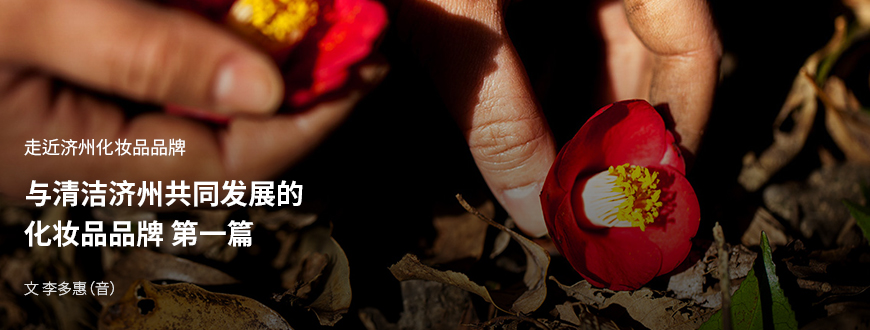

기획취재콘텐츠
- Home
- 제주라이프
- 기획취재콘텐츠
与清洁济州共同发展的化妆品品牌 第一篇새로운 글



济州作为化妆品原料宝库而备受瞩目，济州化妆品也受到前所未有的高度关注。诗悦风吟和Beyond等大企业化妆品品牌争先恐后地推出添加济州原料的产品，而济州本土品牌也纷纷跟进，如济州“Indi”品牌对济州蓼兰加以利用，“爱珂捷”品牌则利用济州紫松果菊、细柱五加等多种济州植物原料推出基础系列产品。各大品牌积极运用济州本土原料，将其与品牌故事相结合，面向造访济州的游客和国内外消费者进行宣传，同时提升品牌地位。随着济州化妆品原料越发受到关注，韩国知名化妆品ODM厂商也已进入济州，并不断寻找和研发新原料，将济州形象植入产品，为济州化妆品产品及其原料产业奠定发展基础。
展现济州自然价值的自然主义化妆品品牌——悦诗风吟
悦诗风吟是一家自然主义化妆品品牌，与济州的缘分最早要追溯到几十年前。爱茉莉太平洋创始人徐成焕董事长坚持要“拯救韩国固有茶文化”，曾在最适宜种茶的济州耕耘绿茶园。
- 西广茶园风景 ⓒ悦诗风吟 -
此后，爱茉莉太平洋绿茶园的绿茶茁壮成长，重获新生。数十年如一日研究绿茶，他们发现绿茶作为化妆品原料的功效，进而开发出化妆品。悦诗风吟从韩国首家自然主义化妆品品牌起步，利用济州绿茶打造出火热爆款“绿茶平衡系列”，成为名副其实的韩国代表性化妆品品牌。
- 悦诗风吟绿茶平衡护肤套装 ⓒ悦诗风吟 -
继“绿茶平衡系列”之后，悦诗风吟还先后利用15种济州原料推出化妆品，其中包括火山岩泥、寒兰、香榧、山茶花、油菜花蜜、大樱花、丑橘等。每当悦诗风吟利用济州原料推出产品，该原料也会随之备受瞩目。济州的寒兰、香榧、山茶花、火山岩泥、溶岩海水等自然资源虽然早已有之，但公众知名度不高，如今其功效、魅力与悦诗风吟一同为公众所知晓。这离不开悦诗风吟关注济州岛与众不同的自然特性，以文献研究为基础，寻找对皮肤有功效的原料，努力创造有别于陆地的价值和原料故事。
- 悦诗风吟环保抗皱精华广告活动 ⓒ悦诗风吟 -
“据文献记载，鲸鱼产仔会吃裙带菜。我们曾在该故事的基础上介绍过济州裙带菜的功效。功能性产品抗皱精华的关键原料就是济州清洁海洋中的裙带菜和马尾藻提取物，为了有效体现原料的再生能力，我们结合‘鲸鱼一产仔，裙带菜歉收’的传说故事，在活动中着重阐述了海洋植物所蕴含的再生能力和净化功效。”（悦诗风吟Moeum财团秘书长韩灿浩（音））
- 悦诗风吟Moeum财团秘书长韩灿浩 -
悦诗风吟业绩
| 分类 | 2010年 | 2010年 | 2012年 | 2013年 | 2014年 | 2015年 | 2016年 |
|---|---|---|---|---|---|---|---|
| 销售额(增长率) | 828 | 1,405(69.69%) | 2,294(63.27%) | 3,328(45.07%) | 4,567(37.23%) | 5,921(29.65%) | 7,679(29.69%) |
| 营业利润(增长率) | 65 | 188(189.23%) | 363(93.09%) | 498(37.19%) | 765(53.61%) | 1,256(64.18%) | 1,965(56.45%) |

2012年，悦诗风吟进军中国市场，在上海开设了第一家门店。济州的清洁原料与中国人喜爱的济州旅游胜地形象相结合，获得了中国游客的青睐。同年，悦诗风吟销售额便达到2294亿韩元，营业利润达到363亿韩元，分别同比增长63%和93%，此后年均增速分别达到30%和50%。
然而，悦诗风吟并未止步于利用济州原料推出有故事的产品，还着力宣传济州的价值，通过多种活动助力当地经济发展。
悦诗风吟与济州各个乡村携手合作，开展名为‘美丽采购’的爱茉莉太平洋独家公平交易项目，旨在原料选购过程中遵循‘原料安全、环境保护、社区贡献’三大原则，积极为环境和社会做出贡献。
- 悦诗风吟Moeum财团秘书长韩灿浩 -
- 山茶花村 ⓒ悦诗风吟 -
悦诗风吟山茶花系列所用花瓣直接采自济州岛西归浦市南元邑新兴二里的“山茶花村”，而香榧系列产品所用的香榧果则购自济州市旧左邑松堂村。悦诗风吟与济州之间的公平交易文化既有利于企业直接从社区采购安全原料，最大限度减少在栽培、加工、运输等环节影响环境，也有利于确保当地原料销路稳定。
- 西广茶园悦诗风吟济州之家内部 ⓒ悦诗风吟 -
悦诗风吟济州之家位于西广茶园，是一座可以品尝济州绿茶的文化空间，深受游客欢迎。既有用济州绿茶制作的茶饮和甜点，也有用济州原料制作的产品可供体验，还有悦诗风吟特供济州的系列产品，同时还出售蕴含济州自然魅力的生活用品。而且，每年都会发行旅游指南——《济州生态治愈旅游手册》，介绍悦诗风吟见证的济州之美。还曾在《济州日记簿》系列中宣传济州自然的珍贵和美丽，介绍了为保护葛扎瓦神秘面貌和森林而做出的各种努力。
- 悦诗风吟济州Playbook2015年~2018年 ⓒ悦诗风吟 -
济州之家是一座品牌体验馆，也是济州道屈指可数的环保建筑，更是一处知名旅游景点。如果说市区的悦诗风吟门店是与大自然沟通的一扇扇窗户，那么济州之家就是一座正式的沟通平台。我认为，品牌与旅游、文化相互衔接会产生丰富多样的内容，将进一步明确和巩固济州与悦诗风吟之间的隐形纽带。
- 悦诗风吟Moeum财团秘书长韩灿浩 -
- 中东旗舰店 ⓒ悦诗风吟 -
截至2020年3月，悦诗风吟已经在全球17个国家（包含韩国）利用济州原料推出多个系列的化妆品。2020年2月，悦诗风吟在阿联酋迪拜购物中心开设首家中东旗舰店，门店装修以源自济州自然的灵感和体现济州传统的天然原料为主题，同时增强了济州与悦诗风吟的联系性。
中东旗舰店访客对济州和悦诗风吟的自然主义故事产生了浓厚的兴趣。空间设计让人联想到济州的美丽自然，同时更加深入感受悦诗风吟的品牌口号‘Natural benefits from JEJU’。
- 悦诗风吟Moeum财团秘书长韩灿浩 -
悦诗风吟与济州的联系历久弥坚，并以实际行动回答了品牌与地区如何实现互惠共赢。
이전글